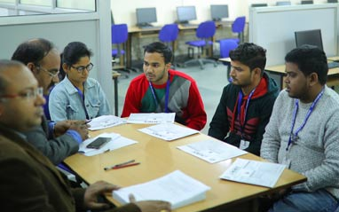
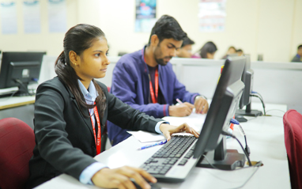

Master of Computer Application Department
The Department of Computer Applications has been imparting knowledge with the most modern curriculum and syllabus to students of the post graduate course since 1999. It offers a post graduate three years degree course that is approved by AICTE and affiliated to Dr APJ Abdul Kalam Technical University, Lucknow. The Department aims to bring Innovation in technology; to go beyond fundamentals with a view to building interest in students with all the new advancements in the field of computers. The department endeavours to play a vital role in the applications of computers by promoting innovative work in android, iOS, cloud computing, machine learning etc. We enjoy a rich heritage of 1600+ alumni and as a matter of pride most of them are associated and employed with companies of high repute across the country and abroad. And to this end, we are committed to providing an exciting academic program to prepare students for the greatest challenges of the 21st century.
About
VISION
The vision of the department is to achieve excellence, be a leader in the field of computer applications, to nurture students by inculcating knowledge for contribution towards Industry and Socio-economic development to meet global challenges.

MISSION
- To offer state-of-art education in Computer Science and Applications.
- To provide strong conceptual foundation complemented with extensive practical training.
- To inculcate value-based, socially committed professionalism to the cause of overall development of students and faculty.

Programme Educational Objectives (PEOs)
- To build a sound foundation in mathematical, computer science and application concepts necessary to formulate, analyze and solve computer application problems faced by the society.
- To communicate effectively, work harmoniously in teams with professional ethics and learn to adopt an integrated approach to solve problems using good analytical, design and implementation skills.
- To create a conducive environment for the students who will contribute to society as decisive, expressive, ethical and responsible citizens with proven expertise.
- To enrich students with effective communication skills, documentation skills, financial management skills and practices to give them an ability to solve multidisciplinary problems.
- To empower students with team building skills and leadership qualities that prepare them for employment, entrepreneurship and competent professionals to serve society and as per global needs.
Programme Outcomes (POs)
- An ability to apply the mathematical, computing fundamentals and scientific concepts that underlie modern computing models.
- An ability to identify, analyze a problem, formulate algorithms, computing processes and its applications to reach substantial conclusions.
- Comprehensive designing and evaluating solutions for complex computing applications with consideration of public health, social welfare and environmental considerations.
- Use research-oriented knowledge to understand the impact of solutions for the recent technologies in industries and the IT market.
- Use modern computing tools and techniques to solve the real world problems.
- Understand and commit to professional ethics and cyber regulations, responsibilities, and norms of professional computing practices.
- Create and provide recognition to the ability of engaging in life-long learning and continuing professional development.
- To understand financial management principles for managing software projects in multidisciplinary environments.
- An ability to read-write effective reports, design documentation of software projects, make effective presentations, give and understand clear instructions.
- Comprehend and analyze health, safety, legal, ethical and cultural issues within the professional computing practices.
- Independent learning, as an individual and as a team leader, for continual development in multidisciplinary environment.
- Create, design and adapt innovative methodologies and apply the inherent skills with absolute focus to function as an entrepreneur.